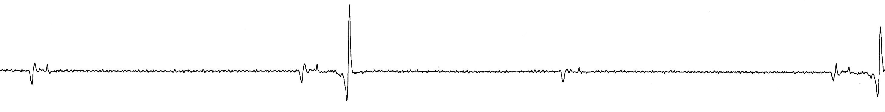

SYN
COPE
2018 ESC Guidelines for the diagnosis and management of syncope
CONCEPT
to document • to
provoke
-
ABPM (ambulatory BP monitoring)to detect nocturnal hypertension.to detect and monitor OH in daily life.
-
Holter Monitorconsidered in frequent syncope or presyncope (≥1/wk).
-
Loop RecorderExternal recorder: for those with once-in-4wks episode.ILR (implantable loop recorder) : indicated in recurrent syncope or syncope with high-risk criteria after unrevealing evaluation.
-
Video Recordingconsidered home video recordings of spontaneous events.
-
Autonomic Function Testconsider Valsalva maneuver or Deep-breathing test if neurogenic OH is suspected.
-
Carotid Sinus Massageindicated in patients>40 years of age with syncope of unknown origin compatible with a reflex mechanism.
-
EP Studyold MI + unexplained syncope + not yet indicated for ICD.bifascicular block + unexplained syncope
-
Exercise Testingsyncope during or shortly after exertion.
-
Tilt Testingsuspected; but not confirmed by initial evaluation, of reflex syncope.assessment of delayed OH, POTS vs psychogenic syncope.
Carotid Sinus Massage

BP / ECG Monitor
| I | CSM is indicated in patients >40 years of age with syncope of unknown origin compatible with a reflex mechanism. |
| I | Carotid Sinus Syncope (CSS) = CSM with bradycardia and/or hypotension + reproducible symptoms |
| OK |
No contraindications. Careful in those with prior stroke/TIA, or known carotid stenosis. |

Electrophysiologic Study